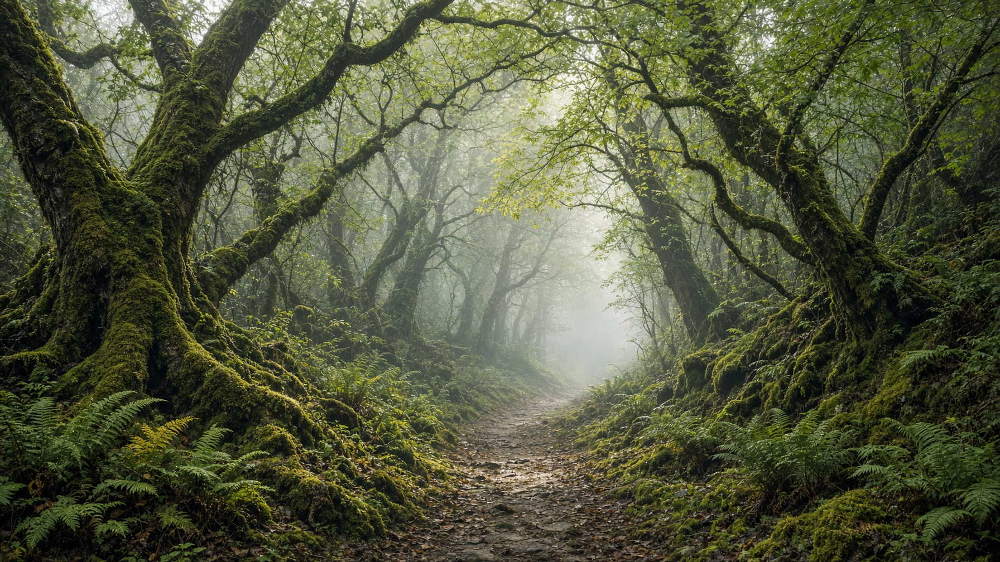

Since 2014
Houses, then land, then people.
Grovewell began as a side desk in a timber-frame shop on SE Division. Builders kept asking who would sell the houses they were proud of without dressing them up as ski chalets. The answer, it turned out, was us.
We still keep a short book. Six to twelve homes a year. Each one has a file on energy, water, and what was planted or protected.
The atelier remains in Portland. The houses are wherever the land still has a say: the Cascades, the Gorge, the San Juans, the North Coast, the Hudson.
12Homes represented a year, at most
47Acres under conservation easement
2014Year the atelier opened
2Working days to a first reply
The desk
MEMara Ellison
Principal, Portland
Principal, Portland
JRJonah Reed
Forest & gorge listings
Forest & gorge listings
PSPriya Shah
Coastal and valley homes
Coastal and valley homes
Visit the atelier
412 SE Division Street, Portland. Tuesdays through Fridays, by appointment. Bring a topographic map if you have one; we like those more than mood boards.
Write to us